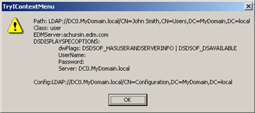

This sample C++ project demonstrates how to add a new context menu item to the context menu displayed by the primary Active Roles snap-in.
All files related to this project are saved in the folder '...\SDK\Samples\ARServer Snap-in\Ds\Context Menu Extension'.
Building the Sample
To build the sample project
-
In Microsoft Visual Studio 2008, open the solution file TryIContextMenu.sln.
-
On the Standard toolbar, choose Release MinSize from the Solution Configurations list box.
-
On the Build menu, click Rebuild Solution.
Registering the Context Menu Extension DLL in a Display Specifier
After you build the project, register the context menu extension DLL under any of the following attributes of the appropriate display specifier: edsaEDMSContextMenu, edsaLDAPContextMenu. The format of values for those attributes are described in Registering Property Page and Context Menu Extensions.
To clarify the registration procedure, consider the steps you should perform to extend the context menu for the user objects.
To register the context menu extension DLL in the user-Display DS
-
Choose the Raw mode for Active Roles snap-in display:
-
On the View menu, click Mode, and then in the View Mode dialog box, select the Raw Mode option and click OK.
-
-
In the console tree, expand the Configuration node, expand the Application Configuration node, expand Active Roles Display Specifiers (Custom), and then click the appropriate locale-specific container (the locale container for US-English is 409). Note that if the locale-specific container does not exist, you should create that container using this procedure.
-
In the details pane, right-click the display specifier user-Display, point to All Tasks and then click Advanced Properties. Note that if the DS user-Display is absent within the locale-specific container, you should create that DS using this procedure.
-
Using the Advanced Properties dialog box, set the attribute edsaLDAPContextMenu to the following value: 1,{AF5A731F-9C2E-41C2-85FA-42416A4EF62D}
-
Close the Advanced Properties dialog box and restart the Active Roles Administration Service.
Note:
{AF5A731F-9C2E-41C2-85FA-42416A4EF62D} is the string representation of the CLSID for the context menu extension created with this sample project. This value is set in the file TryIContextMenu.idl (see the line: uuid(AF5A731F-9C2E-41C2-85FA-42416A4EF62D)).
How the Sample Works
After you build this project and register the created extension menu DLL in the display specifier user-Display, the Active Roles snap-in will display a new item TryIContextMenu in the context menu for users. If you click TryIContextMenu in the user's context menu, Active Roles displays the dialog box similar to the following screen:

 Related Topics
Related Topics{kind=link}